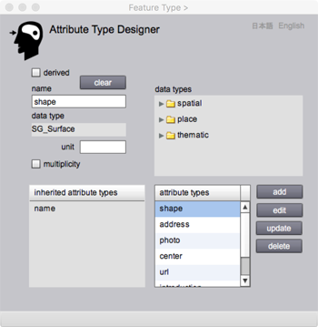

<!DOCTYPE html PUBLIC "-//W3C//DTD XHTML 1.0 Transitional//EN" "http://www.w3.org/TR/xhtml1/DTD/xhtml1-transitional.dtd">
<html xmlns="http://www.w3.org/1999/xhtml">
<head>
<meta http-equiv="Content-Type" content="text/html; charset=UTF-8" />
<title>Attribute Type Designer</title>
<link href="gittokCSS.css" rel="stylesheet" type="text/css" />
</head>
<body>
<p class="FirstHeader">Attribute Type Designer</p>
<p class="secondHeader">Introduction</p>
<p class="mainSentence">Attribute types included in a feature type or an association type are defined in Attribute Type Designer. Most features and associations have attributes. For example, the feature type &quot;Earthquake&quot; may have &quot;seismic center&quot; and &quot;intensity&quot; as attributes. the data type of seismic center could be SG_Point and the data type of intensity cold be Real. </p>
<p class="mainSentence">In case of gittok, there are 4 types of attributes. They are thematic data type, spatial data type, place data type, and temporal data type. </p>
<p class="secondHeader">Thematic data types</p>
<p class="mainSentence">Integer, Real , Bool and CharacterString are simple data types used for thematic attributes. ArrayList of simple data  is also a data type of a thematic attribute if multiplicity is required. Implementation of a value of each data type depends on the programming language. Gittok is implemented by Adobe Flash Builder. Thus implementation is done by Actionscribpt 3.0.</p>
<p class="mainSentence">If a data type is Integer or Real, users may put unit of measure such as m, km, and m2. However gittok does not check the validity of the unit. </p>
<p class="secondHeader">Spatial data types</p>
<p class="mainSentence">Spatial attribute represents a spatial characteristic of a feature. In gittok, it is represented by 2-dimensional geometry, SG_Point, SG_Curve and SG_Surface. They topologically relates with others. SG_Point is a boundary of SG_Curve. A sequence of SG_Curve with direction (SG_Ring) is a boundary of SG_Surface. A coordinate is not spatial attribute, but a part of the spatial attribute. SG_Point includes position and its data type is coordinate. SG_Curve has a sequence of coordinates to represent a shape of a curve. In gittok, 3-dimensional primitive such as Solid is not defined. </p>
<p class="mainSentence">Spatial attribute is one of the most important attributes for geographic features. There is a possibility that a feature has more than one type of spatial attributes. While, there is a possibility that a feature does not have a spatial attribute. Imagine the concept of &quot;University&quot;.<br />
  University associates with its campus and buildings in its area. It means &quot;Campus&quot; may have its area and buildings as its attributes. They are spatial attributes. However &quot;University&quot; itself does not have a spatial attribute, because it is a imaginary object. The existence of the university is assured by  an agreement between government and people related in the university. </p>
<p class="secondHeader">Place data types</p>
<p class="mainSentence">Place attribute indirectly represents a position of a feature. There are two types of places. One is a place indicating the position in the real world. The other is a place in the information space such as a place in Internet. A place in the real world is called &quot;geographic identifier&quot;. A place in Internet is represented as &quot;Universal Resource Locator (URL)&quot;. Gittok uses Address as geographic identifier.  URL, ImageURL, SoundURL, and VideoURL are place in the information space. Gittok allows f4v format for the video data, and mp3 for sound. </p>
<p class="secondHeader">Temporal data types</p>
<p class="mainSentence">to be written</p>
<p class="secondHeader">Attribute type page</p>
<p class="secondHeader"></p>
<p class="mainSentence">Figure 1. Page for Attribute Type Design</p>
<p class="thirdHeader">FIELDS</p>
<p class="mainSentence"><strong>name (editable)</strong><br />
  The name of attribute type is keyed-in here. The first character of the string shall be lowercase. The name shall be unique in the feature type. </p>
<p class="mainSentence"><strong>data types (selectable)</strong><br />
The list of data types for the selection. The list includes spatial, place and thematic data types.</p>
<p class="mainSentence"><strong>data type</strong><br />
  The data type selected on &quot;data types&quot; list for the attribute is shown.</p>
<p class="mainSentence"><strong>unit (editable)</strong><br />
  The unit of measure is keyed-in here.</p>
<p class="mainSentence"><strong>inherited attribute types</strong><br />
  The list of attribute types inherited from the parent is listed here.</p>
<p class="mainSentence"><strong>attribute types (selectable)</strong><br />
  The list of attribute types defined in this page is listed here. To edit, update or delete, the types shall be selected before the operation.</p>
<p class="thirdHeader">BUTTON</p>
<p class="mainSentence"><strong>derived</strong><br />
  If the attribute is used to store the return value of an operatiion, this check box should be clicked.</p>
<p class="mainSentence"><strong>multiplicity</strong><br />
  If the attribute is an array of values, this check box should be clicked.</p>
<p class="mainSentence"><strong>add</strong><br />
  The attribute type defined is added in the list by clicking this button.</p>
<p class="mainSentence"><strong>edit</strong><br />
  The parameters of an attribute is edited by clicking this button after the attriibute selection on the list.</p>
<p class="mainSentence"><strong>update</strong><br />
  Edited attribute type is restored in the list by clicking this button.</p>
<p class="mainSentence"><strong>delete</strong><br />
  The attribute selected on the list is deleted by clicking this button.</p>
<p class="mainSentence"><strong>clear</strong><br />
  The pomadeters shown on the GUI is erased by clicking this button. The new definition will be possible.</p>
<p class="mainSentence"><strong>日本語</strong><br />
  今あなたが読んでいるドキュメントが表示されます．</p>
<p class="mainSentence"><strong>English</strong><br />
  You can read the tutorial written in English.</p>
<p class="mainSentence">&nbsp;</p>
</body>
</html>
